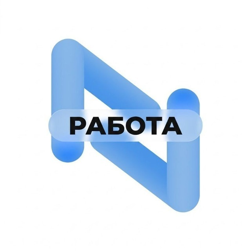

Приложение New.работа
Карта Саратова: смены и вакансии с 14 лет, честные отзывы о работодателях, маршрут и помощница Неви.
🤖 Android
Файл 1 МБ, бесплатно, без рекламы. Обновляется само — новые смены и функции приходят без переустановки.
⬇ Скачать для Android- Нажми «Скачать», затем открой файл.
- Если телефон спросит — разреши установку из браузера (это разовая настройка).
- Нажми «Установить» — значок New.работа появится на экране.
🍏 iPhone
- Открой карту New.работа в Safari.
- Нажми «Поделиться» ⬆ внизу экрана.
- Выбери «На экран Домой» → «Добавить».
✈️ В Telegram
Без установки: открой бота и нажми кнопку «New.работа» слева от поля ввода.
Открыть ботаПриложению не нужны контакты и файлы. Местоположение спрашивается, только когда ты сам нажимаешь ➤ на карте. Персональные данные.